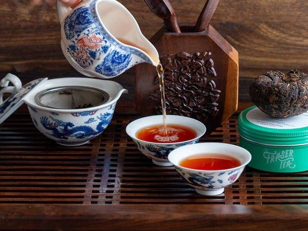

Пуер — це один з найстаріших і найцікавіших видів китайського чаю, який вирізняється своєю глибиною смаку і унікальною історією. Його виготовляють в провінції Юньнань, і він має дві основні форми: сирий (шен) і зрілий (шоу).
Процес виготовлення пуеру досить складний. чайне листя, з яких виготовляють пуер, спочатку проходять стадію зниження рівня вологості, а потім їх пресують в різні форми, такі як круглі брикети або плити. Сирий пуер залишають дозрівати природним шляхом, що може займати роки. За цей час чай змінюється, набираючи складний, багатошаровий смак. Зрілі пуери ферментують штучно, що прискорює процес і робить чай більш м’яким і злегка солодким уже через кілька місяців.
Смак пуеру дуже різноманітний: він може бути відтінений нотками шкіри, дерева, землі, а іноді навіть шоколаду чи кави. У процесі витримки його смак стає більш гладким і багатим. Під час заварювання пуеру ви можете помітити , як він змінюється з кожною новою заваркою, виявляючи все нові відтінки смаку.
Цей чай також має чимало корисних властивостей. Пуер містить антиоксиданти, які можуть допомогти знизити рівень холестерину і підтримувати здоров’я серця. Він також може допомогти покращити травлення і сприяти детоксикації організму.
У Китаї пуер часто стає частиною чайних церемоній, де його заварюють і смакують у спеціальному ритуальному процесі. Цей процес може бути досить тривалим і є важливою частиною соціальних взаємодій. Важливо зазначити, що пуер також можна зберігати роками, і з часом його смакові якості можуть ще більше вдосконалюватися.Так що, якщо ви вирішите спробувати пуер, будьте готові до подорожі у світ його багатих і складних смакових нюансів, що розкриваються з кожною чашкою.